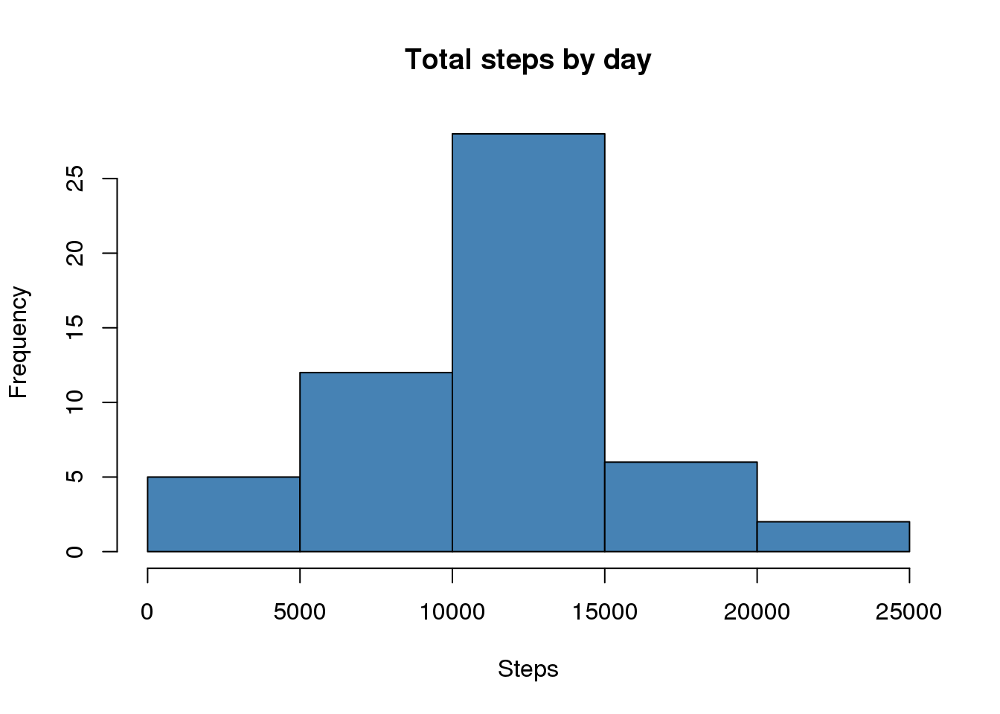
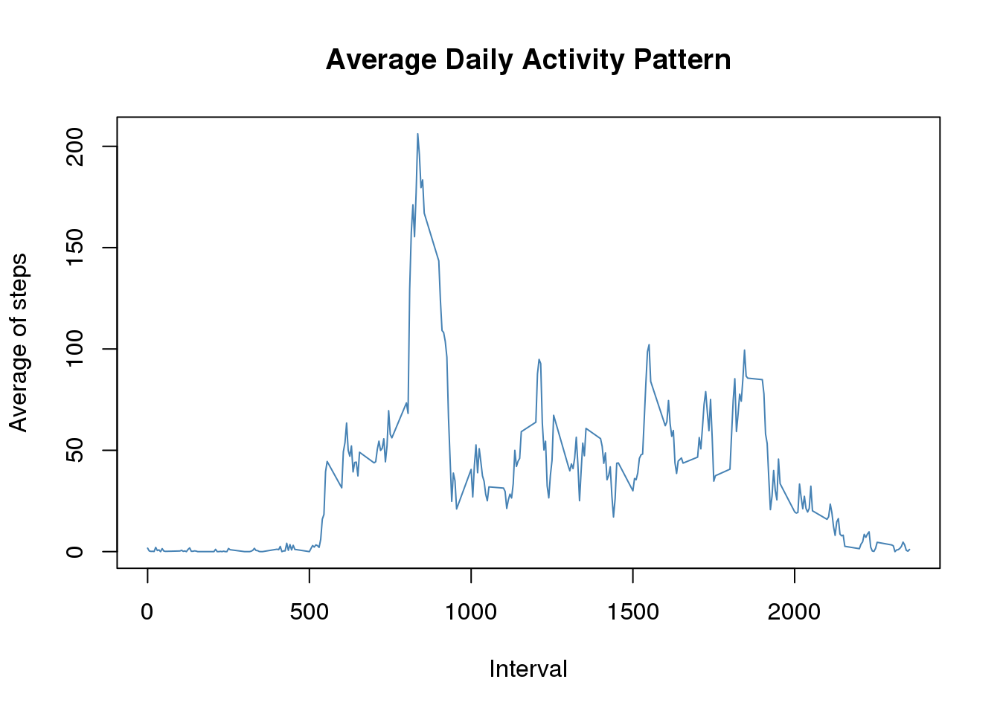
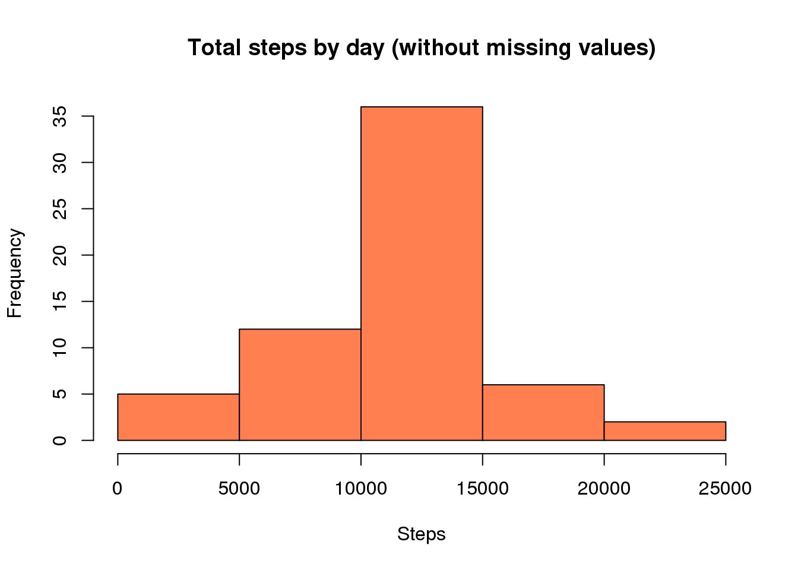
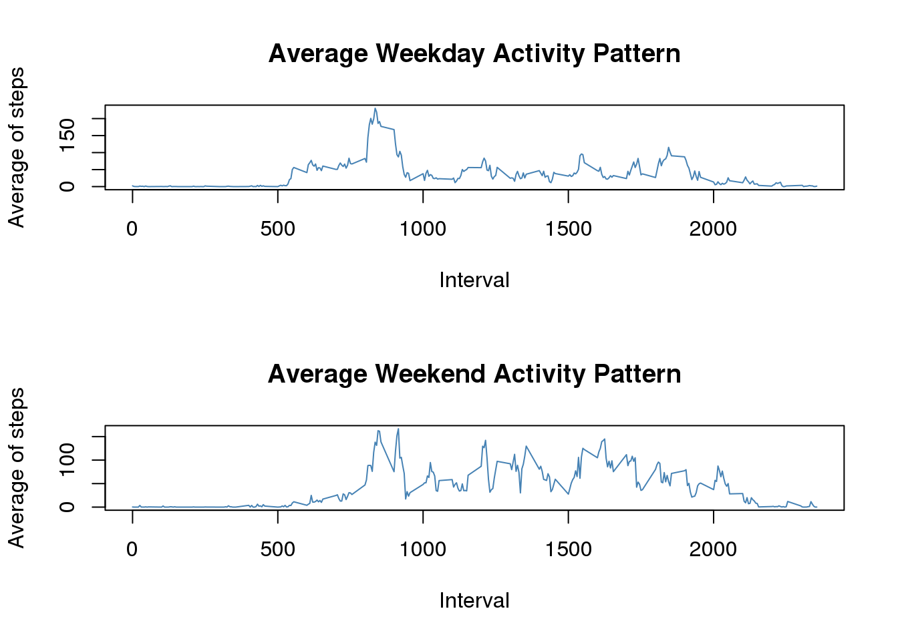

This report is part of an assignment for the online course “Reproducible Research” imparted by Roger Peng, PhD with the Johns Hopkins University through the online platform Coursera.
The project consists on doing some data analysis and documenting the complete process in this report according to the concept of Literate Statistical Programming. The data to be analyzed comes from an activity monitoring device, which collected two months of data in 5 minute intervals during the months of October and November, 2012. The dataset contains the number of steps taken during each interval. (Peng, 2014)
The dataset for this analysis is the Activity Monitoring Data and it was downloaded from Cloudfront, unzipped and read into the R Environment using the following code:
download.file("https://d396qusza40orc.cloudfront.net/repdata%2Fdata%2Factivity.zip","Activity Monitoring Data")
unzip("Activity Monitoring Data")
activityData <- read.csv("activity.csv")No transformations of the data were required at this point.
As instructed, missing values were ignored for this part of the assignment. This part of the assignment has 3 tasks.
To do this calculation, the aggregate() function was used as follows:
totalByDay <- aggregate(activityData$steps, by=list(activityData$date), FUN=sum)
head(totalByDay)## Group.1 x
## 1 2012-10-01 NA
## 2 2012-10-02 126
## 3 2012-10-03 11352
## 4 2012-10-04 12116
## 5 2012-10-05 13294
## 6 2012-10-06 15420The base plotting system was used for this task.
hist(totalByDay$x, main="Total steps by day", xlab="Steps", col="steelblue")
Here’s the code used for this calculation. Please notice the na.rm option set to TRUE in order to be able to calculate the numbers despite the missing values.
meanTotalByDay <- mean(totalByDay$x, na.rm= TRUE)
medianTotalByDay <- median(totalByDay$x, na.rm= TRUE)
cat("The mean total number of steps taken per day is", meanTotalByDay, "steps, and the median total number of steps taken per day is", medianTotalByDay, "steps.")## The mean total number of steps taken per day is 10766.19 steps, and the median total number of steps taken per day is 10765 steps.For this part of the assignment, a time series plot must be presented. The plot should include each 5 minute interval in the X-axis along with the average number of steps taken on that interval, across all days. Afterwards, the interval with the highest average across all days must be calculated and reported. Here’s the code, using the aggregate() function once again, as well as the base plotting system.
intervalAverageAcrossAllDays <- aggregate(activityData$steps, by = list(activityData$interval), FUN = mean, na.rm= TRUE)
head(intervalAverageAcrossAllDays)## Group.1 x
## 1 0 1.7169811
## 2 5 0.3396226
## 3 10 0.1320755
## 4 15 0.1509434
## 5 20 0.0754717
## 6 25 2.0943396plot(intervalAverageAcrossAllDays, type="l", main="Average Daily Activity Pattern", xlab= "Interval", ylab= "Average of steps", col= "steelblue")
highestInterval <- intervalAverageAcrossAllDays$Group.1[intervalAverageAcrossAllDays$x == max(intervalAverageAcrossAllDays$x)]
highestAverage <- max(intervalAverageAcrossAllDays$x)
cat("The 5 minute interval with the highest average across all days is the", highestInterval, "interval, with", highestAverage, "steps.")## The 5 minute interval with the highest average across all days is the 835 interval, with 206.1698 steps.This section will try to introduce some values for the intervals in which they’re missing. There are 4 tasks for this section.
This is easily accomplished by subsetting the dataset (using the is.na() function) and applying the length() function.
missingValues <- length(activityData$steps[is.na(activityData$steps)])
cat("There are", missingValues, "values missing in the dataset.")## There are 2304 values missing in the dataset.My strategy was to use the rounded mean of each interval across all days. I think this makes more sense than using just the mean because otherwise it would mean that fractional steps were taken, and that doesn’t really make sense.
Here’s the code I used. I would’ve liked to implement a more elegant solution, but this works fine.
filledData <- activityData
for(i in 1:length(filledData$steps))
ifelse(is.na(filledData$steps[i]), filledData$steps[i] <- round(intervalAverageAcrossAllDays$x[intervalAverageAcrossAllDays$Group.1 == filledData$interval[i]]),next)
head(filledData)## steps date interval
## 1 2 2012-10-01 0
## 2 0 2012-10-01 5
## 3 0 2012-10-01 10
## 4 0 2012-10-01 15
## 5 0 2012-10-01 20
## 6 2 2012-10-01 25totalByDayFilled <- aggregate(filledData$steps, by = list(filledData$date), FUN= sum)
hist(totalByDayFilled$x, main="Total steps by day (without missing values)", xlab="Steps", col="coral")
meanTotalByDayFilled <- mean(totalByDayFilled$x)
medianTotalByDayFilled <- median(totalByDayFilled$x)
cat("The mean total number of steps taken per day is", meanTotalByDayFilled, "steps. The median is", medianTotalByDayFilled, "steps.")## The mean total number of steps taken per day is 10765.64 steps. The median is 10762 steps.The assignment asks “Do these values differ from the estimates from the first part of the assignment?” And then it asks “What is the impact of imputing the missing data on the estimates of the total daily number of steps?”
The estimates don’t differ much from those of the first part of the assignment. In both cases, the difference is less than 0.03%, so I don’t think there’s a very big impact on the estimates.
In this section, it’s first required to include a new variable in the dataset to determine if the date corresponds to a regular week day or to a weekend day.
As suggested in the assignments, I used the weekdays() function to complete this part of the assignment. Please notice that it would’ve been better for this part of the assignment to transform the date variable in the dataset to a proper date format, however I just decided to do the conversion as part of the loop.
Once again, I would’ve liked to implement a more elegant solution, but this works fine.
for(day in filledData$date)
ifelse(weekdays(strptime(day, "%Y-%m-%d")) %in% list("Saturday","Sunday"), filledData$WeekDay[filledData$date == day]<-"weekend", filledData$WeekDay[filledData$date == day]<-"weekday")
filledData$WeekDay <- as.factor(filledData$WeekDay)
head(filledData$WeekDay)## [1] weekday weekday weekday weekday weekday weekday
## Levels: weekday weekendThe assignment finally asks to make a panel plot showing the difference between the regular week day activity pattern and the weekend day activity pattern.
intervalAverageAcrossWeekdays <- aggregate(filledData$steps[filledData$WeekDay == "weekday"], by = list(filledData$interval[filledData$WeekDay == "weekday"]), FUN = mean)
intervalAverageAcrossWeekends <- aggregate(filledData$steps[filledData$WeekDay == "weekend"], by = list(filledData$interval[filledData$WeekDay == "weekend"]), FUN = mean)
par(mfrow = c(2,1))
plot(intervalAverageAcrossWeekdays, type="l", main="Average Weekday Activity Pattern", xlab= "Interval", ylab= "Average of steps", col= "steelblue")
plot(intervalAverageAcrossWeekends, type="l", main="Average Weekend Activity Pattern", xlab= "Interval", ylab= "Average of steps", col= "steelblue")
There seems to be more activity over the weekends than during regular week days.